This homework covers two ways of representing smooth surfaces. In Section I, I evaluated Bezier curves and Bezier surface patches with de Casteljau's algorithm, which builds every point on a curve out of repeated linear interpolation, and extends to surfaces by applying the 1D algorithm first along the rows of control points and then across them. In Section II, I worked with triangle meshes stored in a half-edge data structure. I computed area-weighted vertex normals for smooth shading, implemented the two local operations that change a mesh's connectivity, edge flip and edge split, and combined them into Loop subdivision, which turns a coarse mesh into a finer and smoother one.
The most interesting lesson for me was how unforgiving the half-edge structure is. Every element points at its neighbors, so a flip or a split is only correct if every pointer
of every affected element is updated, and a single stale pointer often looks fine on screen and only breaks something much later. Drawing the before and after diagrams,
writing out a table of all the pointers, and checking simple invariants (such as h->twin()->twin() == h) turned the edge operations from guesswork into bookkeeping.
Loop subdivision was also a good lesson in how much a mesh's connectivity matters, not just its vertex positions: the same cube subdivides lopsided or perfectly symmetric
depending only on how its faces are triangulated.
A Bezier curve of degree \(n\) is defined by \(n+1\) control points \(p_0, \dots, p_n\) and a parameter \(t \in [0, 1]\). de Casteljau's algorithm evaluates the point \(B(t)\) on the curve using nothing but repeated linear interpolation. Given a level of \(k\) points, we build the next level of \(k-1\) points by interpolating between each pair of neighbors:
\[ p_i' = (1 - t)\,p_i + t\,p_{i+1}, \qquad i = 0, \dots, k-2 \]Repeating this step shrinks the set of points by one each level. After \(n\) levels only one point is left, and that point is exactly \(B(t)\). Sweeping \(t\) from 0 to 1 traces out the whole curve. The intermediate levels also have a nice geometric meaning: the last segment before the final point is tangent to the curve at \(B(t)\).
I implemented a single level of the algorithm in BezierCurve::evaluateStep. It takes the current level of points, loops over each neighboring pair
\((p_i, p_{i+1})\), and uses push_back to add the interpolated point \((1-t)\,p_i + t\,p_{i+1}\) to a new vector, which it returns.
The parameter \(t\) is the class member BezierCurve::t, so the function reads it directly instead of taking it as an argument.
The GUI calls this function repeatedly: pressing E shows one more level, and pressing C draws the full curve by
calling it \(n\) times for many values of \(t\) between 0 and 1.
To test it, I made my own Bezier curve with 6 control points (bzc/curve3.bzc). The screenshots below show each level of evaluation,
from the original control points (white) through the intermediate points (blue) to the final evaluated point (red).
|
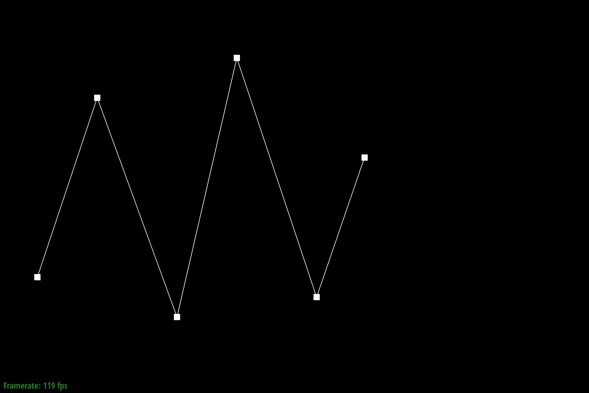 |
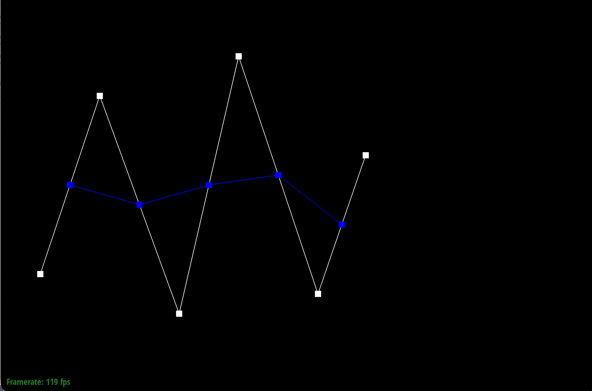 |
|
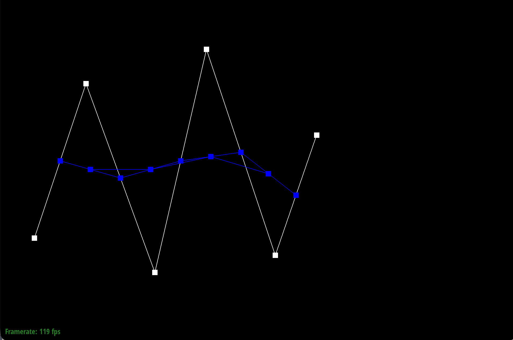 |
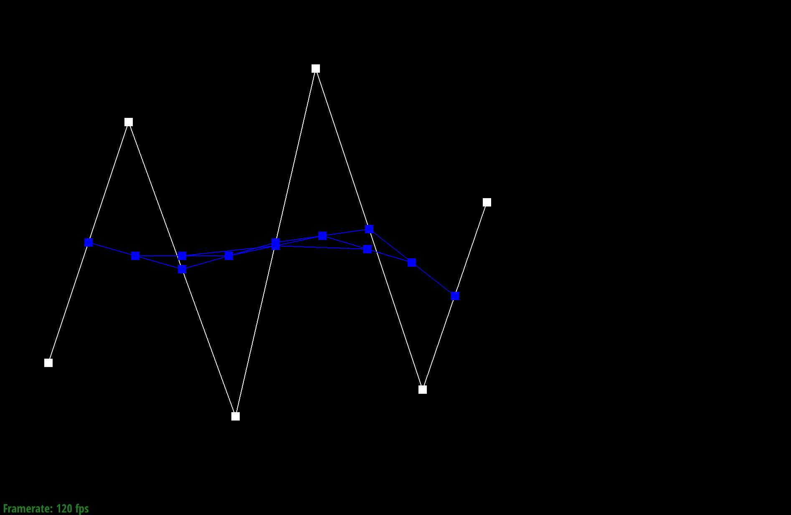 |
|
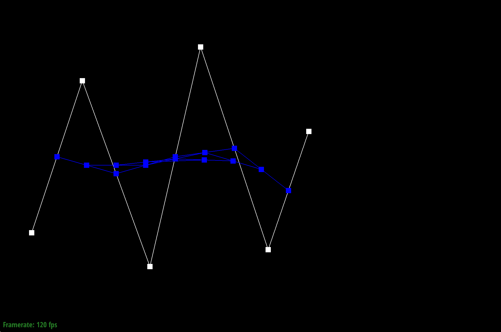 |
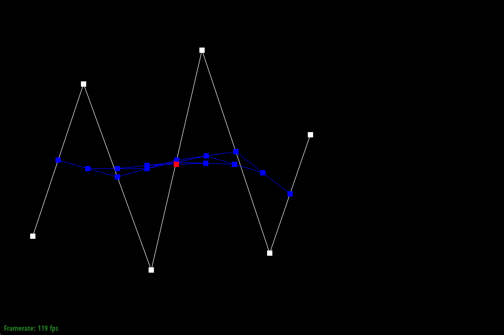 |
The first image below shows the fully evaluated Bezier curve (green) together with the de Casteljau construction. In the second image I dragged the last control point far to the right and scrolled to change \(t\). The curve changes shape to follow the new control points, and the red point slides to a different position along the curve.
|
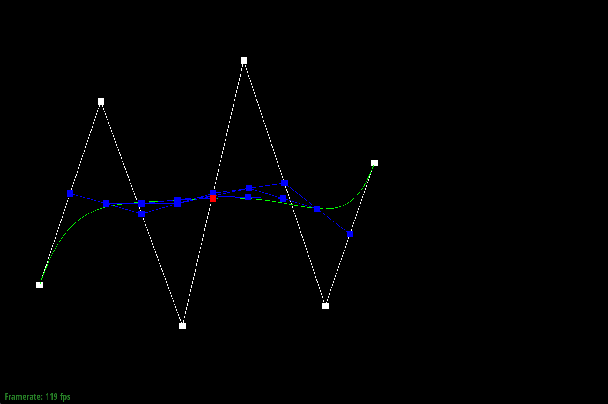 |
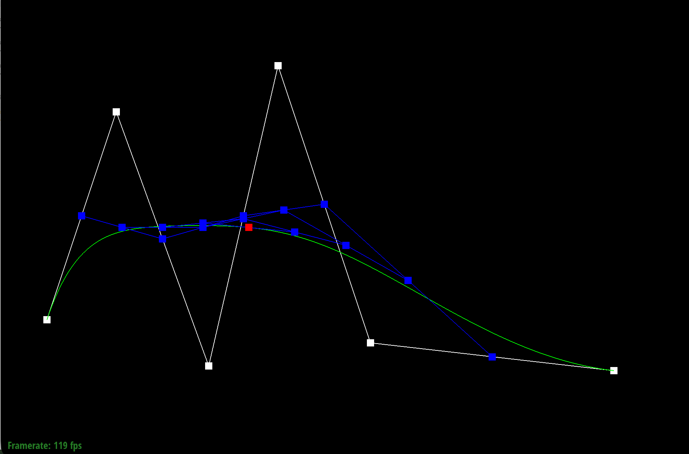 |
A bicubic Bezier patch is defined by a \(4 \times 4\) grid of 3D control points \(p_{ij}\) and two parameters \(u, v \in [0, 1]\). The key observation is that the surface is separable: each row of the grid is itself a Bezier curve, so we can reuse the 1D de Casteljau algorithm from Part 1 in two passes.
Doing the columns first and then the rows gives the same point, since the patch is a tensor product: \(S(u, v) = \sum_i \sum_j B_i(v)\,B_j(u)\,p_{ij}\), and the order of the two sums does not matter.
I implemented this with three functions in BezierPatch:
evaluateStep(points, t) performs one level of de Casteljau on 3D points. It is the same as Part 1, except that \(t\) is passed in as an argument.evaluate1D(points, t) calls evaluateStep repeatedly until only one point is left, and returns that point. Looping until the size is 1 means it works for any number of control points.evaluate(u, v) calls evaluate1D on each row controlPoints[i] with \(u\), collects the 4 results, and calls evaluate1D on them with \(v\).
The renderer samples \(S(u, v)\) on a grid of \((u, v)\) values and connects neighboring samples into triangles.
Keeping \(u\) along the rows and \(v\) across them matters: swapping them reverses the triangle winding, which flips the normals and makes the shading look inside-out.
Below is bez/teapot.bez rendered by my implementation. It looks faceted because each triangle is still shaded with a single face normal. Part 3 fixes this.
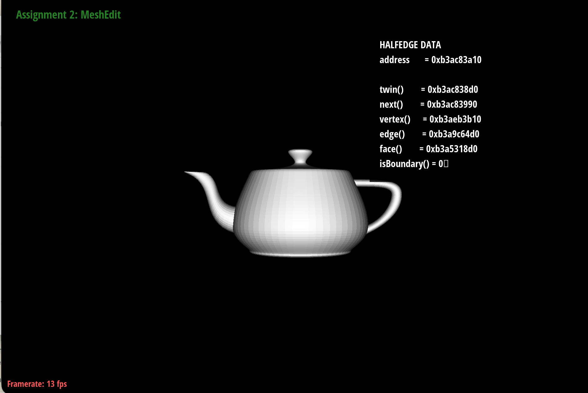
bez/teapot.bez evaluated with separable 1D de CasteljauWith flat shading, every triangle uses its own face normal, so the brightness jumps at every edge and the facets are visible. To shade the mesh as the smooth surface it approximates, each vertex needs its own normal. I compute it as the area-weighted average of the normals of all triangles that touch the vertex, so large triangles count more than thin slivers.
A single cross product gives both a triangle's normal and its area. For a triangle with corners \(p_0, p_1, p_2\), taken in the order of the halfedge
next() pointers (counterclockwise when seen from outside the surface), let
The direction of \(\mathbf{n}\) is perpendicular to the triangle and, because of the counterclockwise order, points outward. Its length \(|p_1 - p_0|\,|p_2 - p_0| \sin\theta\) is the area of the parallelogram spanned by the two edges, which is twice the area of the triangle, so the face has unit normal \(\hat{\mathbf{n}} = \mathbf{n} / |\mathbf{n}|\) and area \(A = \frac{1}{2}|\mathbf{n}|\). The vertex normal is then
\[ \mathbf{N}_v = \text{normalize}\Big( \sum_{f \ni v} A_f\, \hat{\mathbf{n}}_f \Big). \]Since \(A_f\,\hat{\mathbf{n}}_f = \frac{1}{2}\mathbf{n}_f\), this is the same as normalizing the sum of the raw cross products: the factor of \(\frac{1}{2}\) is shared by every term and disappears when the sum is normalized.
I implemented this in Vertex::normal() by walking around the vertex with the half-edge data structure. Starting from the vertex's
halfedge(), I step to the next outgoing halfedge with h = h->twin()->next() until I get back to where I started.
Every halfedge \(h\) visited this way starts at the vertex, so for the face it belongs to, \(p_0\) is the vertex itself, \(p_1\) is
h->next()->vertex(), and \(p_2\) is h->next()->next()->vertex(). For each face I compute \(\hat{\mathbf{n}}\) and \(A\)
from the cross product, add up the weighted normals, and normalize the sum. Because normal() is a const member function,
the traversal uses the constant iterator HalfedgeCIter.
One detail is meshes with holes. At a vertex on the edge of a hole, one of the halfedges around it belongs to the "virtual" boundary face that fills the hole.
That face is not a triangle, so treating it as one would add a normal for a surface that does not exist, or produce NaN when the three rim vertices are collinear.
I skip any halfedge whose face has isBoundary() set, but I still advance \(h\) before skipping. In a do/while loop,
continue jumps straight to the loop condition, so skipping the advance would either end the loop before visiting any faces or loop forever.
The screenshots below show dae/teapot.dae before and after pressing Q to switch from flat shading to Phong shading with my vertex normals.
The wireframe is identical in both, since the geometry does not change, only the normals used for lighting. With vertex normals, OpenGL interpolates the normal
across each triangle, so the brightness changes smoothly and the body, spout, and handle look round instead of faceted.
|
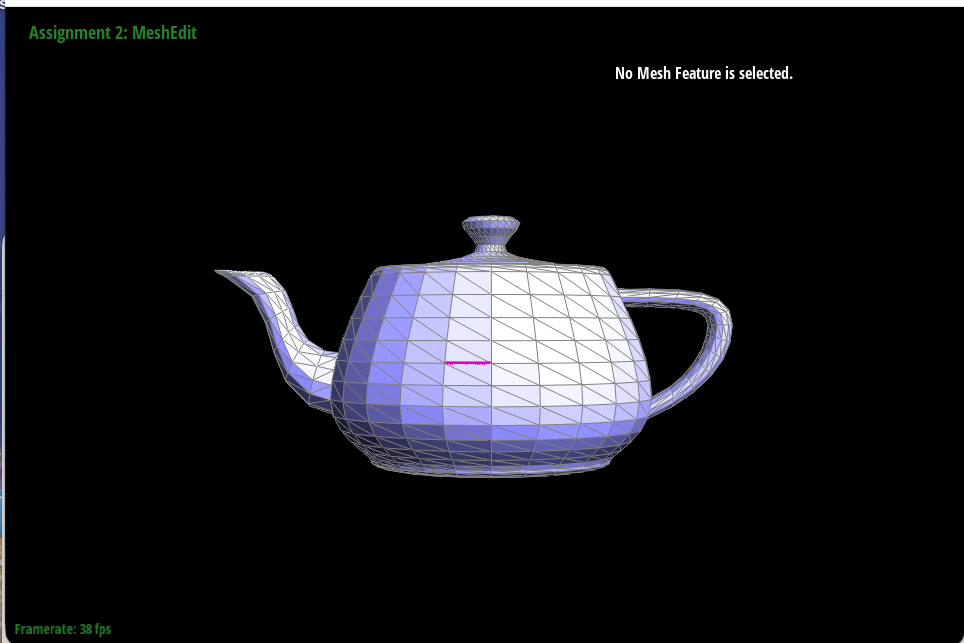 |
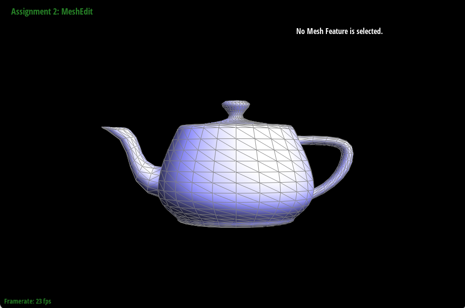 |
Two triangles that share an edge form a quadrilateral, and a flip replaces the shared edge with the quadrilateral's other diagonal. With the shared edge \((b, c)\) between triangles \((b, c, a)\) and \((c, b, d)\), the flip removes \((b, c)\) and adds \((a, d)\), leaving the triangles \((c, a, d)\) and \((a, b, d)\). The mesh has exactly the same number of vertices, edges, faces, and halfedges before and after, so a flip only reassigns pointers and never allocates or deletes anything.
BEFORE AFTER
a a
/ \ / | \
ab / f0 \ ca ab / | \ ca
b ---bc---> c b f1 | f0 c
b <---cb--- c |
bd \ f1 / dc bd \ | / dc
\ / \ | /
d d
f0: b -> c -> a f0: c -> a -> d
f1: c -> b -> d f1: a -> b -> d
ad: a -> d, da: d -> a
My HalfedgeMesh::flipEdge works in four steps:
e0->isBoundary(), one side of the edge is the virtual boundary face, so there is no second triangle. I return e0 unchanged.e0->halfedge(), following next() gives \(ca\) and \(ab\), and its twin() \(cb\) leads to \(bd\) and \(dc\).
Each vertex comes from the halfedge that starts at it (for example, \(d\) is the start of \(dc\)), and the two faces are \(f_0\) and \(f_1\).e0 itself becomes the flipped edge. The four outer halfedges also keep their twins and edges.next() pointers so that the loops become \(c \to a \to d\) and \(a \to b \to d\), and all six face() pointers
(\(f_0\) becomes the right triangle and \(f_1\) the left one). I also point each face at a halfedge in its new loop, and each of \(a, b, c, d\) at a halfedge that starts at it.
That last step matters for \(b\) and \(c\): if either one pointed at \(bc\) or \(cb\), that halfedge now starts at \(a\) or \(d\).The new loops wind the same way as the old ones (counterclockwise from outside), so the face normals still point outward. The work is a fixed number of assignments, so a flip takes constant time. One limitation: if \(b\) or \(c\) has only three neighboring triangles, or if \(a\) and \(d\) are already connected by an edge, the flip produces a non-manifold mesh. The assignment does not require guarding against these cases, so I do not.
My first version only updated the pointers I expected to change, and it had five separate bugs:
bd->vertex(), but a halfedge's vertex() is where it starts, so that was \(b\). The "flipped" edge connected \(a\) to \(b\), an edge that already existed.next() pointers. \(ab\) and \(dc\) still pointed at the old middle halfedges, so following next() from \(ca\) went
\(ca \to ad \to dc \to da \to ab \to ad \to \dots\) and never returned to \(ca\). Any code that walks around that face, such as drawing it or Face::degree(), would loop forever.f->halfedge() and next(). Code that finds a face through a halfedge, which splitEdge and loop subdivision do, would get the wrong face and corrupt the mesh much later.f0->halfedge() and f1->halfedge(), so a face could point at a halfedge that had moved into the other triangle.halfedge() pointers, so \(b\) or \(c\) could point at a halfedge that no longer starts at it.
All five had the same cause, so the fix was to change my approach rather than patch them one at a time. I drew the before and after diagrams above, wrote down a table of
next, twin, vertex, edge, and face for each of the six halfedges after the flip, plus the halfedge for every vertex and face,
and then set every entry in the code, including ones that do not change. That is only a few more lines, and it rules out this whole class of bug.
To check the result, I used these tests:
h->twin()->twin() == h, h->twin()->vertex() == h->next()->vertex(),
following next() three times returns to \(h\), and every halfedge in that loop has the same face(). Every vertex, edge, and face must also point at a halfedge that belongs to it.
I ran these checks in a standalone test program on an icosahedron, after flipping every edge twice and after a sequence of 2000 random flip attempts (skipping the non-manifold cases above), and they all pass.
Bug 3 above is invisible in the viewer but fails the face check immediately.check_for. The provided HalfedgeMesh::check_for(...) lists every element that points at a given element, which is useful for finding a stale pointer.
The screenshots below show dae/teapot.dae before and after flipping an edge on the front of the teapot's body, and after flipping it back.
The change is small at full size, so the second row zooms in on that spot: one quad's diagonal now runs the other way. Flipping the same edge again restores the original triangulation, with no holes.
|
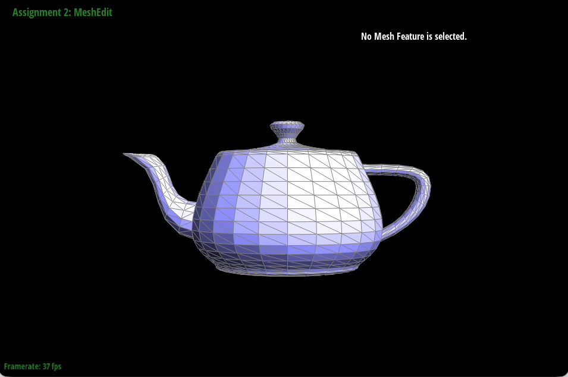 |
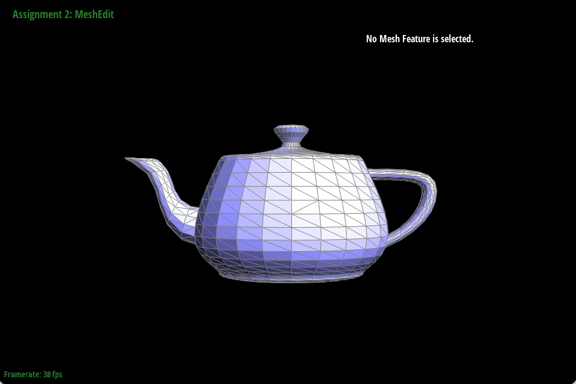 |
|
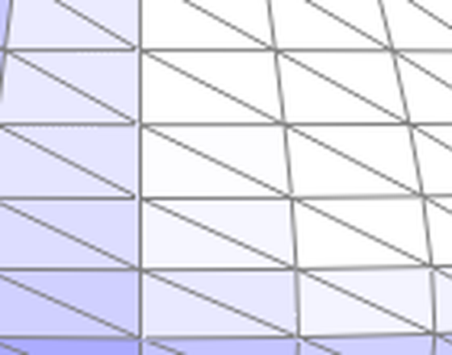 |
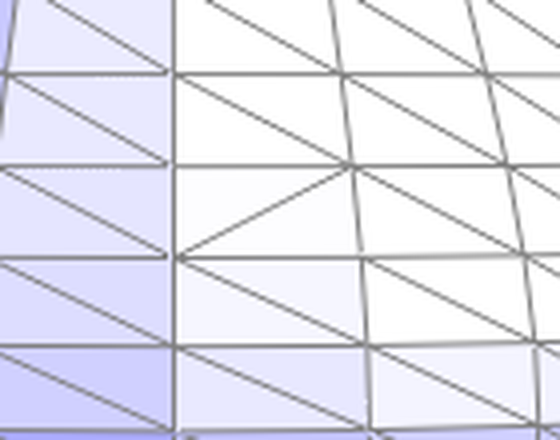 |
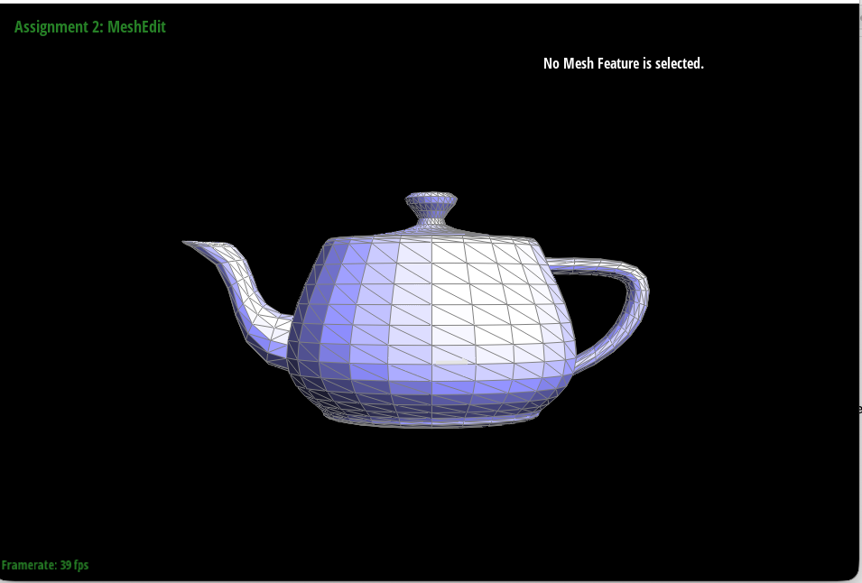
A split inserts a new vertex \(m\) at the midpoint of an edge and connects it to the two opposite vertices. With the shared edge \((b, c)\) between triangles \((b, c, a)\) and \((c, b, d)\), the split replaces the two triangles with four: \((a, b, m)\), \((m, c, a)\), \((m, b, d)\), and \((c, m, d)\). Unlike a flip, a split adds elements to the mesh, and the spec asks for no more than needed:
| before | after | created | |
|---|---|---|---|
| vertices | a, b, c, d | + m | 1 |
| edges | 5 | 8 | 3 |
| halfedges | 10 | 16 | 6 |
| faces | 2 | 4 | 2 |
BEFORE AFTER
a
a / | \
/ \ ab / | \ ca
ab / f0 \ ca / f0 | f2 \
b ---bc---> c b ------m------ c
b <---cb--- c \ f1 | f3 /
bd \ f1 / dc bd \ | / dc
\ / \ | /
d d
f0: b -> c -> a f0: a -> b -> m f2: m -> c -> a
f1: c -> b -> d f1: m -> b -> d f3: c -> m -> d
My HalfedgeMesh::splitEdge works in these steps:
e0->isBoundary(), I return without changing the mesh. I did not attempt the boundary extra credit.e0 becomes the half \(b\)–\(m\), and \(f_0, f_1\) become two of the four triangles.newVertex(), newHalfedge(), newEdge(), and newFace().Halfedge::setNeighbors(next, twin, vertex, edge, face), which assigns all five at once.
That includes the four outer halfedges \(ab, ca, bd, dc\): their twins and edges stay the same, but their next() and face() change.All four triangles keep the counterclockwise order of the originals, so their normals still point outward. The work is a fixed number of assignments, so a split takes constant time.
My first idea was to move \(b\) to the midpoint so that it becomes \(m\), and create a copy of \(b\) at its old position, hoping that I would then not have to touch the existing triangles. That does not work. \(b\) is also a corner of every other triangle around it, and those triangles store the vertex \(b\) itself, not a copy of its position. Moving \(b\) stretches all of them over to the midpoint, where they overlap the new triangles and leave a hole around the copy. Reattaching them to the copy would mean walking all the way around \(b\), which breaks the constant-time requirement. It would also cause problems in Part 6, where each original vertex has to keep its identity and its precomputed new position.
That first attempt also had two C++ mistakes. I "created" elements with default-constructed iterators such as VertexIter(), which point to nothing, so writing through them would crash.
New elements have to be allocated in the mesh with newVertex() and the related functions. I also tried to rename halfedges by declaring the same variable name twice, which does not compile,
and would not have changed any pointers anyway.
I then applied what I learned in Part 4. I drew the after picture, counted exactly which elements are new, and wrote down a table of all five pointers for each of the 12 halfedges before writing any code.
Using setNeighbors for every halfedge meant that no pointer could be forgotten.
To check it, I reused the consistency checks from Part 4 in a standalone test program, together with checks specific to splitting, and all of them pass:
The screenshots below show dae/teapot.dae before and after splitting several edges on the front of the body. The close-ups show the new midpoint vertices, each connected to
the two opposite corners, so every split edge now has four small triangles around its midpoint.
|
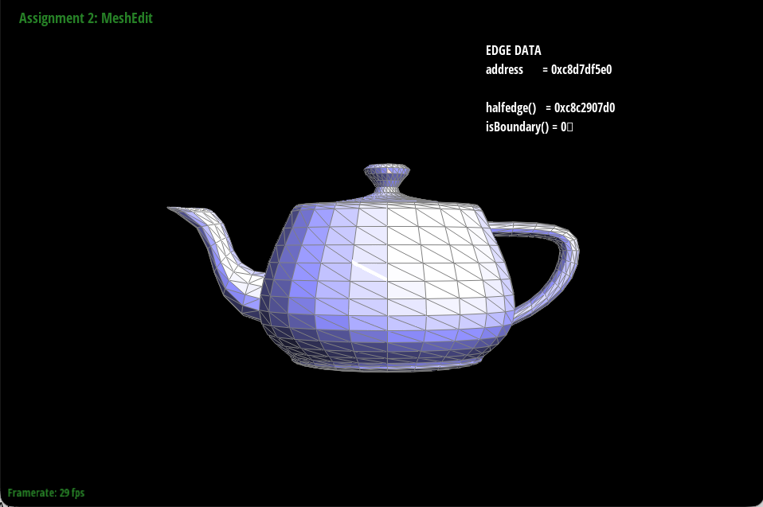 |
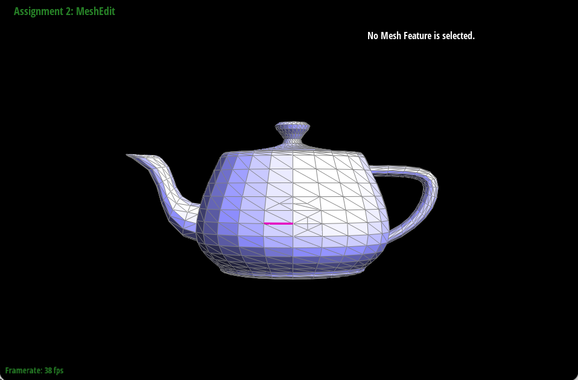 |
|
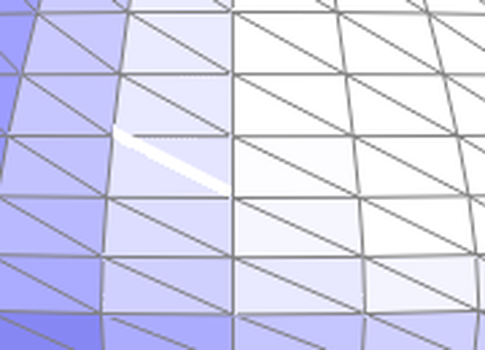 |
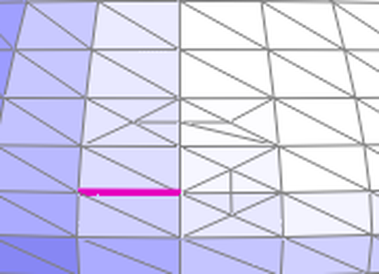 |
Next, I started again from the original teapot and combined splits with flips in the same area. Flipping edges around the new midpoint vertices changes which vertices are connected. One of the flips produced the long, thin triangle in the middle of the close-up, which is shaded slightly differently because its face is tilted differently from its neighbors. The mesh stays closed throughout, with no holes or missing triangles.
|
|
|
|
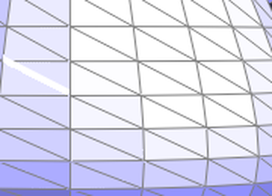 |
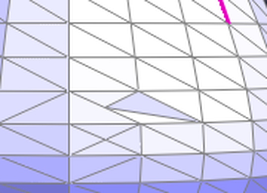 |
Loop subdivision makes a mesh finer and smoother. Each triangle is split into four by connecting its edge midpoints, and then every vertex is moved to a weighted average of the vertices around it. A new vertex created on the edge \((A, B)\), shared by triangles \((A, C, B)\) and \((A, B, D)\), is placed at
\[ \frac{3}{8}(A + B) + \frac{1}{8}(C + D), \]and an original vertex with \(n\) neighbors moves to
\[ (1 - n u)\,p + u \sum_{\text{neighbors}} q, \qquad u = \begin{cases} 3/16 & n = 3 \\ 3/(8n) & \text{otherwise.} \end{cases} \]
Both formulas must use the positions of the original mesh. So I compute every new position first, and only then change the connectivity and move the vertices.
My MeshResampler::upsample follows the five steps in the starter code:
isNew = false and walk around it with h = h->twin()->next(),
adding up the neighbor positions and counting \(n\) in the same walk. The result goes into Vertex::newPosition; position is not touched yet.e->halfedge(), and \(C\) and \(D\) are the opposite corners of the two
triangles, reached with next()->next() on each side, as in my edge flip. The result goes into Edge::newPosition. Each original edge will produce exactly one new vertex
when it is split, so the edge is where that vertex's future position is stored before the vertex exists. It has to be computed now: once neighboring edges have been split,
the triangles around an edge change and next()->next() no longer reaches the original \(C\) and \(D\).newPosition. My splitEdge also sets the flags: the new vertex is new, the two edges that cut across the old triangles are new,
and the two halves of the original edge are not.newPosition into position. The new vertices already got their final positions in step 3,
which is safe because nothing after step 2 reads vertex positions.
The bug worth describing was in step 3. My first loop skipped edges with isNew == true, assuming that !isNew meant "an edge of the original mesh". It does not.
Splitting an edge creates a brand-new edge object for one of the two halves, and that half has isNew == false because it lies along the original edge.
New edges are added to the end of the edge list, so my loop reached that half, split it again, which created another half with isNew == false, and so on forever.
In a test, the mesh had grown to 456,165 edges after 0.3 seconds, when one round should give 120.
Marking the halves as new would have stopped the loop but broken step 4: a half connects an old vertex to a new one, so it would get flipped. On a copy of the code with that change, after one round
the vertex degrees ranged from 2 to 9 instead of being 5 and 6. In this code base Edge::isNew means "cuts across an original triangle", which is what step 4 needs,
so step 3 needs a different stopping rule. Every edge created by a split touches the new vertex, so splitting only edges whose two endpoints are both old visits exactly the original edges and then stops.
(I also had a C++ scoping bug: I declared \(u\) inside the if and else blocks, so it no longer existed on the line that used it.)
To check the result, I compared it against independent calculations in a standalone test program:
upsample, the test computes where every old vertex and every edge vertex should end up. After 1 to 3 rounds on an icosahedron and 1 to 2 rounds on a tetrahedron (which covers both values of \(u\)), every vertex matches.Loop subdivision is an approximating scheme: every vertex, including the original ones, moves to an average of its neighbors. So the mesh gets smoother, but it also shrinks, and sharp features are rounded off. Corners suffer most, because a corner vertex is averaged with neighbors that all lie on the inside of the corner. On the cube below, the corners are \(\sqrt{3} \approx 1.73\) units from the center at the start, but only between 0.87 and 1.04 after four rounds, and the sharp edges become smooth curves.
Pre-splitting edges reduces this effect. Splitting the edges at a corner or along a crease places extra vertices close to the feature, so each average is taken over a smaller neighborhood and the rounded region shrinks. As a test, I took the cube with its face diagonals pre-split (described below) and split each of the three cube edges at one corner twice, which puts vertices a quarter of the way along them. After four rounds that corner was still 1.37 units from the center, while the other seven corners were at 1.16 to 1.21. The more splits near a feature, the sharper it stays.
The screenshots below show the same effect in the viewer. On one face of the original cube, I repeatedly split the edges toward its two right-hand corners, each time splitting the piece closest to the corner again, so the new vertices crowd toward the right side of the face. After several rounds of subdivision, the right side keeps a much squarer silhouette, while the left side is rounded off as usual. The trade-off is visible too: the repeated splits create long, thin triangles, and these leave diagonal ridges across the subdivided surface. So pre-splitting can preserve a sharp feature, but the triangles it creates should stay reasonably well shaped.
|
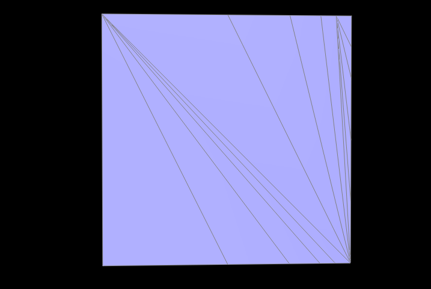 |
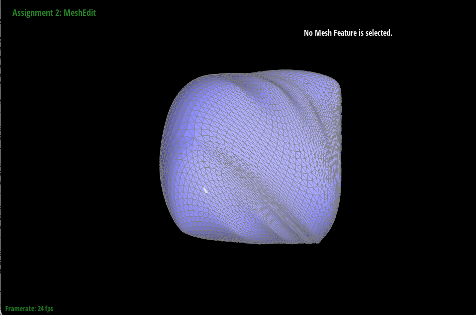 |
The screenshots below show dae/cube.dae before subdivision, after two rounds, and after several more rounds. The cube does not become a symmetric rounded shape: it ends up lopsided.
|
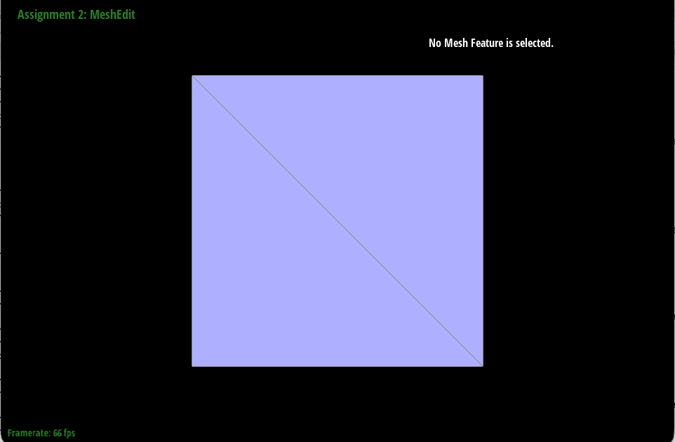 |
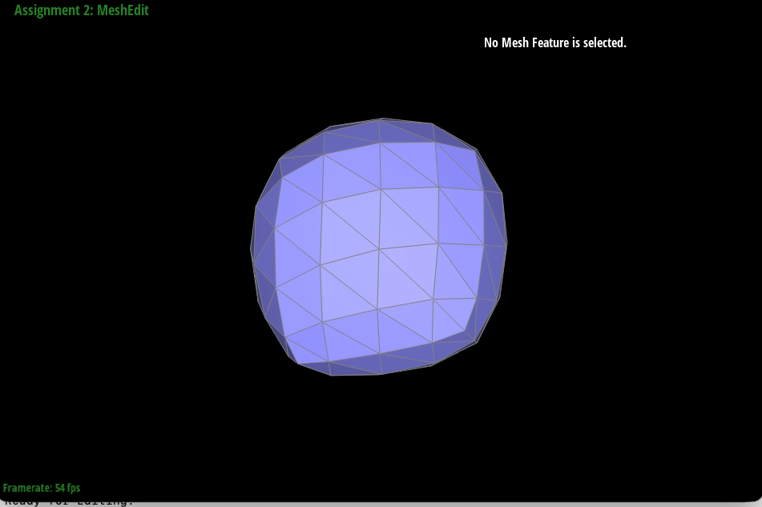 |
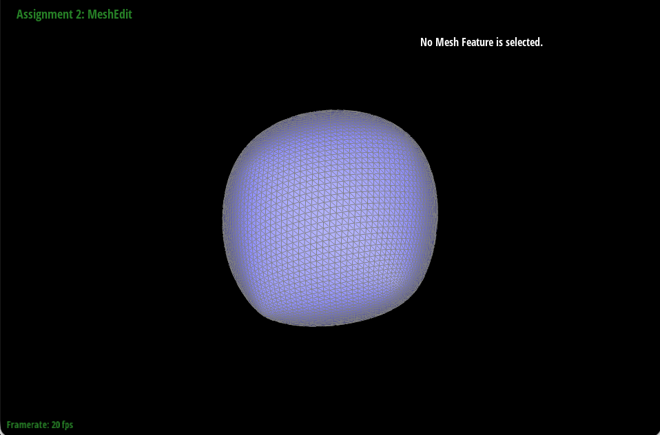 |
The cause is the triangulation. cube.dae splits each square face into two triangles along one diagonal, and the six diagonals are not arranged symmetrically.
As a result, the eight corners touch different numbers of edges: their degrees are 3, 4, 4, 4, 5, 5, 5, and 6. Loop subdivision treats corners differently depending on their degree
(through \(n\) and \(u\)), and an edge vertex depends on which corners \(C\) and \(D\) the diagonals connect it to. So corners that are geometrically identical are pulled by different amounts.
Measured in a test program, after four rounds the eight corners end up between 0.87 and 1.04 units from the center, a difference of almost 20%.
The fix is to pre-process the cube so that its triangulation has the same symmetry as the cube itself. Splitting the diagonal of every face (six splits) puts a vertex in the center of each face with four triangles around it. Now every corner has degree 6, every face center has degree 4, and every face looks exactly like every other face. After four rounds, all eight corners are exactly the same distance from the center (1.157), and the shape has the same width along all three axes. Flips alone cannot achieve this: six diagonals have twelve endpoints, which cannot be shared equally among the eight corners, so with two triangles per face some corners always have higher degree than others.
The screenshots below compare the two cases after several rounds of subdivision. Without pre-processing, the cube becomes a lopsided blob. With all six face diagonals split first, it becomes a symmetric rounded cube, and the vertex created by splitting the visible face's diagonal sits exactly in the middle of that face.
|
|
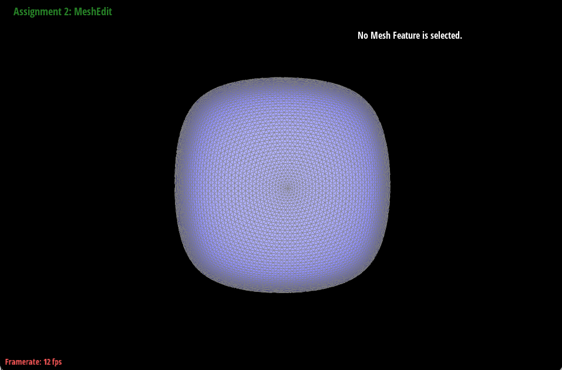 |